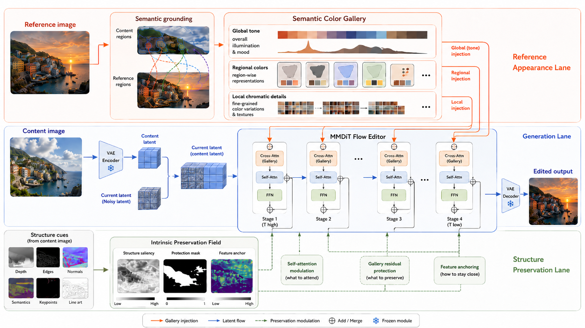

Semantic Color Gallery
Global, regional, and local reference cues are organized for semantic appearance grounding.
Reference-Based Color Transfer
Semantic Appearance Grounding for Reference-Based Color Transfer
SAGE-Color transfers palette, tone, contrast, and region-level appearance from a reference image while preserving the content image's geometry, identity, layout, and fine structure.
Abstract
SAGE-Color treats the reference image as chromatic evidence rather than a spatial template. The content image remains responsible for pose, object boundaries, and layout, while reference appearance is grounded to compatible content regions.
Global, regional, and local reference cues are organized for semantic appearance grounding.
Content latents keep the generated image anchored to the original geometry and fine detail.
Color-free structure cues reduce unsafe residual edits in identity-sensitive regions.
Sliding Gallery
Each slide keeps the content and reference inputs in fixed compact cells, then gives the SAGE-Color result the largest frame so the transferred scene style is easy to compare.
Qualitative Examples
Architecture
SAGE-Color separates dense content conditioning, reference appearance grounding, and content-only structure preservation inside an MMDiT flow editor.

Evaluation
SAGE-Color improves reference color fidelity while keeping content-compatible reconstruction.

Release
The GitHub repository contains inference, training, environment setup, and reproducibility scripts. The released checkpoints are hosted on Hugging Face so the code repository stays lightweight.
git clone https://github.com/chenxib/sage-color.git
cd sage-color
conda env create -f environment.yml
conda activate sage-color
bash scripts/bootstrap_external_diffusers.sh
pip install -r requirements.txt
bash scripts/download_weights.sh
bash scripts/download_required_models.sh
CUDA_VISIBLE_DEVICES=0 \
CONTENT_IMAGE=path/to/content.png \
REFERENCE_IMAGE=path/to/reference.png \
OUTPUT_IMAGE=outputs/sage-color/sample.png \
bash scripts/final_model/bash/infer.sh